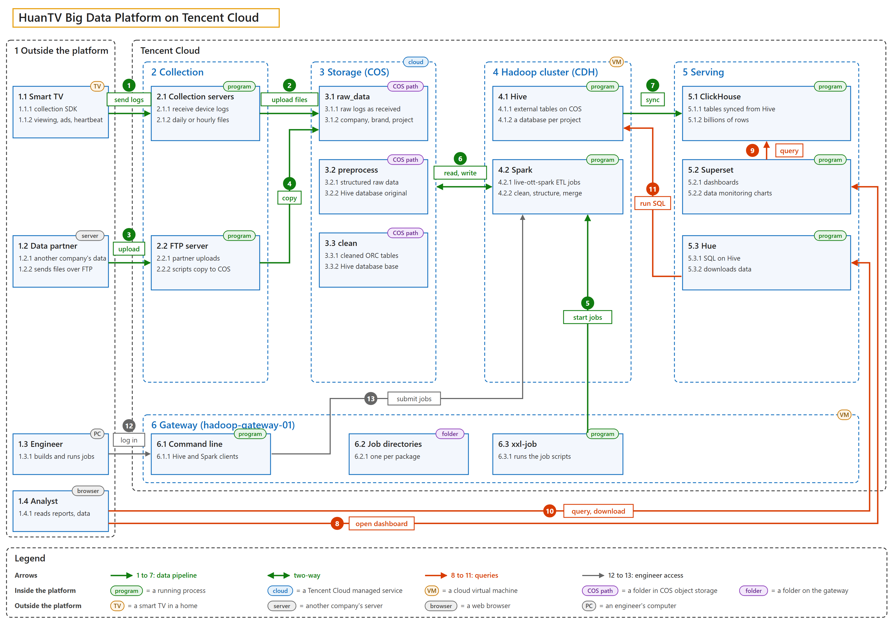

Smart-TV Big Data Platform
Two smart-TV big data platforms, each processing over a billion device records a day with sub-second queries. HuanTV's moved in 2022 from self-managed CDH Hadoop on Tencent Cloud to Alibaba Cloud EMR and from xxl-job to Apache DolphinScheduler; Gozen Data's was built on Alibaba Cloud with an OSS data warehouse, EMR, DolphinScheduler and ClickHouse.
- Role: Senior Big Data Architect: Architecture, Development & Operations
- Organization: Guangzhou Huan Technology (HuanTV), Guangzhou
- Dates: Apr 2015 – Sep 2022
- Stack: CDH Hadoop (Hive, Spark), Tencent Cloud (COS, EMR), Alibaba Cloud (EMR, DataWorks, Quick BI), ClickHouse, Kafka, Apache DolphinScheduler, Kubernetes, NGINX + Lua, GitLab, Jira, Confluence, JumpServer
What it does
Collects, stores and analyzes smart-TV device data (viewing, advertising exposure and audience labels) for two companies: HuanTV, the employer, and its partner Gozen Data (勾正数据). In 2021 and 2022 I was still employed by HuanTV but worked at Gozen Data. Each company had its own platform, two in all, and each handled over a billion device records a day, queried in under a second with ClickHouse and Spark.
In 2022 HuanTV's self-managed CDH Hadoop clusters on Tencent Cloud virtual machines were migrated to Alibaba Cloud EMR (VPC and VPN, security groups, auto-scaling), with infrastructure cost down 35%, and its scheduling moved from xxl-job to Apache DolphinScheduler. Gozen Data built a second platform of its own on Alibaba Cloud.
Architecture
HuanTV platform on Tencent Cloud
HuanTV's platform before the 2022 migration, drawn from my platform usage guide.

| # | Item | What it is | Talks to |
|---|---|---|---|
| 1 | Outside the platform | Everything that sends data to the platform or uses it, outside Tencent Cloud. | 2, 5, 6 |
| 1.1 | Smart TV | TVs in homes running the collection SDK, which reports viewing, ad exposure and heartbeats. | 2.1 |
| 1.2 | Data partner | Another company's server that sends its data as files over FTP. | 2.2 |
| 1.3 | Engineer | A team member's computer, used to build and run jobs. | 6.1 |
| 1.4 | Analyst | A colleague reading dashboards or downloading data in a browser. | 5.2, 5.3 |
| 2 | Collection | Receives device logs and partner files and puts them in COS. | 1, 3 |
| 2.1 | Collection servers | Servers that receive the TVs' logs and upload them to COS as daily or hourly files. | 1.1, 3.1 |
| 2.2 | FTP server | Receives partners' file uploads; scripts on it copy the files to COS. | 1.2, 3.1 |
| 3 | Storage (COS) | Tencent Cloud object storage, the platform's main storage, in three top-level folders. | 2, 4 |
| 3.1 | raw_data | Raw logs as received, mostly unstructured, in folders by company, brand and project. | 2, 4.2 |
| 3.2 | preprocess | Structured raw data that Hive reads directly (Hive database original). |
4 |
| 3.3 | clean | Tables cleaned by the business logic, as compressed ORC files (Hive database base). |
4 |
| 4 | Hadoop cluster (CDH) | Self-managed CDH Hadoop on Tencent Cloud virtual machines. | 3, 5, 6 |
| 4.1 | Hive | External tables over the COS folders, one database per project. | 3, 5.1, 5.3 |
| 4.2 | Spark | The live-ott-spark ETL jobs, written to the coding standard below. | 3, 6 |
| 5 | Serving | Answers the analysts' queries. | 1.4, 4 |
| 5.1 | ClickHouse | The database for fast queries over billions of rows, synced from Hive. | 4.1, 5.2 |
| 5.2 | Superset | Dashboards on ClickHouse, including data monitoring charts. | 1.4, 5.1 |
| 5.3 | Hue | SQL on Hive in the browser, also used to download data. | 1.4, 4.1 |
| 6 | Gateway (hadoop-gateway-01) | The cluster's entry and bastion machine: all command-line work goes through it. | 1.3, 4 |
| 6.1 | Command line | The Hive and Spark clients engineers use to run queries and submit jobs. | 1.3, 4.2 |
| 6.2 | Job directories | /hwdata/job, one directory per package, each with bin, lib, log and data. |
6.3 |
| 6.3 | xxl-job | The scheduler that runs the job scripts on a timetable, with an executor per job type. | 4, 6.2 |
| ① | send logs | The TVs send their logs to the collection servers. | 1.1 to 2.1 |
| ② | upload files | The collection servers upload their files to COS. | 2.1 to 3.1 |
| ③ | upload | A partner uploads its files to the FTP server. | 1.2 to 2.2 |
| ④ | copy | Scripts copy the partner files to COS. | 2.2 to 3.1 |
| ⑤ | start jobs | xxl-job starts the Hive and Spark jobs. | 6.3 to 4 |
| ⑥ | read, write | Spark reads raw_data and preprocess and writes clean. |
4.2 and 3 |
| ⑦ | sync | Hive tables are synced into ClickHouse. | 4.1 to 5.1 |
| ⑧ | open dashboard | An analyst opens a Superset dashboard. | 1.4 to 5.2 |
| ⑨ | query | Superset queries ClickHouse. | 5.2 to 5.1 |
| ⑩ | query, download | An analyst runs SQL or downloads data in Hue. | 1.4 to 5.3 |
| ⑪ | run SQL | Hue runs the SQL on Hive. | 5.3 to 4.1 |
| ⑫ | log in | An engineer logs in to the gateway. | 1.3 to 6.1 |
| ⑬ | submit jobs | The engineer submits Spark jobs from the command line. | 6.1 to 4.2 |
Gozen Data platform on Alibaba Cloud
Gozen Data's platform on Alibaba Cloud, 2021 to 2022, drawn from my work notes.
![Gozen Data Platform on Alibaba Cloud: 1 outside the platform (smart TVs, data partners, engineers, ad platforms, analysts); on Alibaba Cloud, 2 collection (collection API, Kafka, Flume, FTP server), 3 the data warehouse in OSS (ODS, CDM, ADS), 4 processing on EMR (DolphinScheduler, Hive, Spark), 5 serving (ClickHouse, Quick BI, HMP tag API, Redis) and 6 operations (VPN gateway, JumpServer, team tools, CloudMonitor); green arrows 1 to 10 are the data pipeline, orange 11 to 14 the queries, grey 15 to 17 engineer access.](media/huantv-big-data-platform/gozen-architecture.png)
| # | Item | What it is | Talks to |
|---|---|---|---|
| 1 | Outside the platform | Everything that sends data to the platform or uses it, outside Alibaba Cloud. | 2, 5, 6 |
| 1.1 | Smart TV | TVs in homes running the collection SDK, which reports viewing, ad exposure and heartbeats. | 2.1 |
| 1.2 | Data partner | Another company's server that sends its data as files over FTP. | 2.4 |
| 1.3 | Engineer | A team member's computer, used to build and run jobs. | 6.1 |
| 1.4 | Ad platform | Another company's ad server, which asks for a device's tags on each ad request. | 5.3 |
| 1.5 | Analyst | A colleague or client reading reports in a browser. | 5.2 |
| 2 | Collection | Receives device logs and partner files and lands them in OSS. | 1, 3 |
| 2.1 | Collection API | OpenResty servers (NGINX with Lua scripts) that receive the logs of our own TVs and write each log type to its own Kafka topic; third-party data comes over FTP instead (2.4). | 1.1, 2.2 |
| 2.2 | Kafka | The message queue that buffers the real-time logs. | 2.1, 2.3 |
| 2.3 | Flume | Consumes the Kafka topics and writes the logs to OSS as files. | 2.2, 3.1 |
| 2.4 | FTP server | Receives partners' file uploads, which are copied to OSS. | 1.2, 3.1 |
| 3 | Data warehouse (OSS) | The layered data warehouse, one OSS path per layer (see "Data warehouse layers and storage design" below). | 2, 4 |
| 3.1 | ODS | Raw data as received. | 2.3, 2.4, 4.3 |
| 3.2 | CDM | DWD cleaned detail tables, DWS wide tables and DIM dimension tables. | 4.2, 4.3 |
| 3.3 | ADS | Each project's metrics, one folder per project. | 4.2, 4.3 |
| 4 | Processing (EMR) | The Alibaba Cloud E-MapReduce cluster that turns raw data into warehouse tables. | 3, 5 |
| 4.1 | DolphinScheduler | The workflow scheduler that starts the daily ETL jobs; it runs behind a load balancer. | 4.2, 4.3 |
| 4.2 | Hive | SQL tables mapped onto the OSS paths, queried through Hue. | 3, 5.1 |
| 4.3 | Spark | The Spark ETL jobs, written to the coding standard below, that clean, structure and aggregate the data. | 3, 5.3 |
| 5 | Serving | Answers the queries of analysts and ad platforms. | 1, 4 |
| 5.1 | ClickHouse | The database for sub-second queries, loaded from Hive tables. | 4.2, 5.2 |
| 5.2 | Quick BI | Alibaba Cloud's reporting service: reports and dashboards on ClickHouse. | 1.5, 5.1 |
| 5.3 | HMP tag API | Gives ad platforms the audience tags of a device, keyed by hashed device IDs, and controls cross-screen frequency. | 1.4, 4.3, 5.4 |
| 5.4 | Redis | Holds the tag API's settings: tags, clients and white lists. | 5.3 |
| 6 | Operations | How the team reaches and runs the platform. | 1.3, 4 |
| 6.1 | VPN gateway | Alibaba Cloud's VPN gateway, the engineers' way into the private network. | 1.3, 6.2 |
| 6.2 | JumpServer | The bastion host engineers log in through to reach the servers. | 6.1, 4 |
| 6.3 | Team tools | GitLab for code, Jira for tasks, Confluence for documents. | |
| 6.4 | CloudMonitor | Alibaba Cloud's monitoring, with alerts on EMR and the services. | |
| ① | send logs | The TVs send their logs to the collection API. | 1.1 to 2.1 |
| ② | produce | The collection API writes each log type to a Kafka topic. | 2.1 to 2.2 |
| ③ | consume | Flume reads the topics. | 2.2 to 2.3 |
| ④ | land files | Flume writes the logs into ODS. | 2.3 to 3.1 |
| ⑤ | upload | A partner uploads its files to the FTP server. | 1.2 to 2.4 |
| ⑥ | copy | The partner files are copied into ODS. | 2.4 to 3.1 |
| ⑦ | start jobs | DolphinScheduler starts the Hive and Spark jobs. | 4.1 to 4.2, 4.3 |
| ⑧ | read, write | Spark reads ODS and writes CDM and ADS. | 4.3 and 3 |
| ⑨ | sync | Hive tables are synced into ClickHouse. | 4.2 to 5.1 |
| ⑩ | load tags | The ETL jobs load the audience tags for the tag API. | 4.3 to 5.3 |
| ⑪ | tag lookup | An ad platform asks for a device's tags. | 1.4 to 5.3 |
| ⑫ | read settings | The tag API reads its settings from Redis. | 5.3 to 5.4 |
| ⑬ | open dashboard | An analyst opens a Quick BI dashboard. | 1.5 to 5.2 |
| ⑭ | query | Quick BI queries ClickHouse. | 5.2 to 5.1 |
| ⑮ | connect | An engineer connects through the VPN gateway. | 1.3 to 6.1 |
| ⑯ | log in | The engineer logs in to JumpServer. | 6.1 to 6.2 |
| ⑰ | run jobs | From JumpServer, the engineer runs jobs and queries on EMR. | 6.2 to 4 |
Design decisions
Spark ETL coding standard
I wrote this standard for the team's Spark ETL project before the 2022 migration, when raw data sat in Tencent Cloud COS and jobs were scheduled with xxl-job. It was part of the platform usage guide that a new colleague read before writing a Spark ETL job.
One package per data source
- The package name starts with the channel:
tv.huanfor HuanTV,tv.gzfor Gozen Data,tv.ydfor Yidian, andtv.huan.alliancefor merged data. - The rest of the name is the data source, for example
tv.huan.live.tclfor TCL live TV data. All tables derived from one data source sit in one package, and a package holds one data source, exceptalliance. - Production job directories on the gateway machine are created by package name, so a job's code and its scheduled scripts are found the same way.
One class per table
- A job creates one class for each table it writes, and the class has the table's name: CamelCase for the class, underscores for the table.
- For TCL live TV data, five classes write five tables:
LiveTclLog,LiveTclDeviceInfo,LiveTclAction,LiveTclChannelDurationandLiveTclProgramDuration(base.live_tcl_logand so on).
Three-part job structure with a lineage event trait
Every class has the same three parts, shown here for LiveTclLog:
| Part | What it does |
|---|---|
object LiveTclLog |
Holds main: reads the date, builds a SparkSession named after the table and the date, and times the run. |
class LiveTclLog extends Clean |
Implements doClean, the cleaning logic. |
trait LiveTclLogEvent extends Clean |
Wraps doClean: sends a START message to the event center before the cleaning and an END message after it. |
Each message names the data the job read (one or more sources, such as a COS path), the one table it wrote, the phase, a job ID and the date. The trait is mixed in when the job is created, so the cleaning code never deals with the event center, and every job reports what it read, what it wrote, and when it started and ended. Simplified, without credentials or internal paths:
object LiveTclLog {
def main(args: Array[String]): Unit = {
val dt = args(0)
val spark = SparkSession.builder()
.appName("base.live_tcl_log_" + dt)
.enableHiveSupport()
.getOrCreate()
val job = new LiveTclLog with LiveTclLogEvent
job.doClean(spark, dt)
}
}
class LiveTclLog extends Clean {
override def doClean(spark: SparkSession, dt: String): Unit = {
// cleaning logic
}
}
trait LiveTclLogEvent extends Clean {
abstract override def doClean(spark: SparkSession, dt: String): Unit = {
val jobId = CommonUtil.getUUID
sendMessage(Message.Phase.START, dt, jobId)
super.doClean(spark, dt)
sendMessage(Message.Phase.END, dt, jobId)
}
// sendMessage: topic "hive_etl", from (sources), to (target table), phase, job_id, dt
}
Table layers
Each data source is cleaned into the same kinds of tables, each with its own design principle:
| Table | Example | Design principle |
|---|---|---|
| Raw log | LiveTclLog |
Turn unstructured data into structured data for analysis and later processing; store it as compressed ORC files so queries use fewer resources. |
| Device information | LiveTclDeviceInfo |
Fix each device's region; manage device information (version and field updates) and count devices in total and by dimension. |
| Point-in-time behaviour | LiveTclAction |
Make counting easy at a one-minute granularity; a wide table. |
| Channel time-span behaviour | LiveTclChannelDuration |
Cut the data volume sharply for channel inflow and outflow; serve statistics coarser than one minute. |
| Program time-span behaviour | LiveTclProgramDuration |
Cut the data volume sharply for program metrics; serve statistics coarser than one minute. |
| Merged data | tv.huan.alliance |
The data the business actually uses is usually merged from several data sources and filtered by the sample, extracted from the base tables into merged tables. |
Coding rules
- Use Spark SQL rather than RDDs.
- Use
repartitionto lower executor memory. - Use Spark UDFs rather than broadcast variables.
- Use
mapPartitionsandflatMaprather thanmap. - Use
insert overwriterather thaninsert into. - Avoid dynamic partitions where possible.
- Commit the day's code before leaving work.
- Push to GitLab only after a code review.
Data warehouse layers and storage design
In 2021 I designed the data warehouse layout for Gozen Data's data in Alibaba Cloud OSS: a layered model, one OSS path and one table naming rule per layer, and one account per layer. It replaced the old databases, which were named after their contents (original, base, alliance and so on, as in the Spark ETL standard above).
Layers
| Layer | Name | Role |
|---|---|---|
| ODS | Operational Data Store, the raw data layer | Keeps the structure of the source system's incremental or full data; a staging area that also records the base data and its history, and brings the base data into OSS. |
| CDM | Common Data Model, the common dimension model layer | Processes and integrates the data, builds consistent dimensions, and builds reusable detail tables for analysis and statistics plus metrics summarized at a common granularity. It has three parts: DWD, DWS and DIM. |
| DWD | Data Warehouse Detail, the detail layer (in CDM) | Tables cleaned and desensitized by the business logic, all in compressed ORC files. |
| DWS | Data Warehouse Summary, the summary layer (in CDM) | Wide tables built around the subject being analysed, for the metrics that applications and products need, at a common granularity. |
| DIM | Dimension, the dimension layer (in CDM) | All dimension data. |
| ADS | Application Data Service, the application layer | The metrics and data specific to each project; one per project. |
DWS is built from wide tables: the metrics, dimensions and attributes of one business subject joined into one table, so joins are computed once and reused, less data is scanned, and the common metrics are reused instead of processed again for every project.
Old databases mapped to the new layers
| Old database | Data from | Use | New layer |
|---|---|---|---|
original |
Raw data | Raw data | ODS |
base |
original |
Data after cleaning and structuring | CDM, DWD |
device |
base |
Device wide tables, aggregated by device | CDM, DWS |
dim |
original |
Dimension tables | CDM, DIM |
dmp |
base |
Tables aggregated by user, after households are split into persons | CDM, DWS |
| Project databases | base, original, device, dim |
Metrics drawn from the wide tables and each project's own dimension data | ADS |
Paths and table names
| Layer | OSS path | Table name |
|---|---|---|
| ODS | oss://ods/<table>/dt=<yyyy-MM-dd>/ |
ods_${log_type}_<source table name> |
| DWD | oss://cdm/dwd/<table>/business_dt=<yyyy-MM-dd>/ |
dwd_${log_type}_<table name> |
| DWS | oss://cdm/dws/<table>/business_dt=<yyyy-MM-dd>/ |
dws_${log_type}_<aggregation dimension>_<other information> |
| DIM | oss://cdm/dim/<table>/[business_dt=<yyyy-MM-dd>/] |
dim_${channel_info}_<table name> |
| ADS | oss://ads/<project>/<table>/[business_dt=<yyyy-MM-dd>/] |
ads_${project_name}_${log_type}_<other information> |
- Each layer's path matches its Hive database (
ods,dwdand so on), since most paths hold the data of Hive tables mapped onto them. - A table without partitions has no partition directory.
- If ODS receives a full table every day, it can be stored as a zipper table to save space.
One account per layer
OSS tells permissions apart by AccessKey, so access is divided by account, one per layer and job type:
| Account | Path | Access | Purpose |
|---|---|---|---|
ods_${brand}_${log_type} |
oss://ods/* |
Read and write | Upload or sync raw logs; one account for each log type. |
cdm${ETL} |
oss://ods/* |
Read | Base data ETL. |
oss://cdm/* |
Read and write | Clean, desensitize and structure raw logs; aggregate the common wide tables. | |
ads${project} |
oss://ads/${project}/* |
Read and write | A project's metrics. |
oss://cdm/* |
Read | The CDM detail, dimension and wide tables the project depends on. | |
data_monitor |
oss://* |
Read | Daily data monitoring. |
Source code is private (company platform).